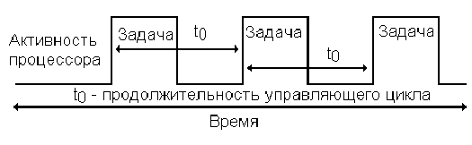
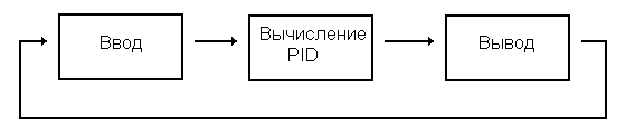
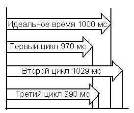
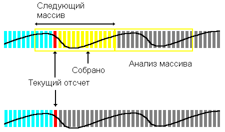

Руководство по реальному времени
В кн. “National Instruments. The Measurement and Automation Catalog 2004”, с. 774-776.
Перевод: Климентьев К.Е., Самара 2004
|
Множеству измерительных и управляющих приложений требуется возможность работы в режиме реального времени. Для того, чтобы понять работу этих приложений реального времени, необходимо иметь представление о базовых принципах реального времени, и о том, насколько оно важно при управлении, обработке сигналов и реагировании на события.
Управление в реальном времени
Занимаясь управлением в реальном времени, вы непрерывно отслеживаете или моделируете состояние физической системы. Управляющая программа циклически выполняет некоторую определенную пользователем процедуру, работа которой разделяется на временные отрезки (см. рис. 1). Вас окружает множество управляющих систем реального времени, таких как системы управления движением вашей машины или термостатическая система управления климатом в вашем доме. (Ось клятi буржуи! – прим. переводчика). Есть несколько параметров, которыми можно охарактеризовать приложение реального времени, - продолжительность управляющего цикла, предсказуемость и разброс (jitter).

Рис. 1. Управление в реальном времени
Продолжительность управляющего цикла
Большинство управляющих систем реального времени взаимодействуют с физической системой путем сравнения ее текущего состояния с ожидаемым состоянием и дальнейшим предсказанием поведения системы на основе результата этого сравнения. Интервал времени между двумя такими сравнениями и есть продолжительность управляющего цикла. Необходимая продолжительность этого цикла зависит от системы. Например, продолжительность цикла в системе управления температурой в духовке довольно велика. Эта система измеряет температуру, сравнивает ее с желаемой температурой и включает/выключает нагревательные горелки. В этом случае вполне достаточен цикл продолжительностью 1 сек. С другой стороны, печи, используемые в промышленности, требуют очень точно выдержанного температурного режима, например, при выращивании кристаллов. В этом случае продолжительность управляющего цикла должны быть существенно меньше, чтобы удовлетворить жестким температурным ограничениям. В общем случае PID-управление в режиме реального времени соответствует рис. 2.

Рис. 2. Типичное управляющее приложение реального времени
Предсказуемость
Предсказуемость характеризует постоянство определенных временных интервалов между событиями. Многие управляющие алгоритмы, такие как PID, требуют очень предсказуемого поведения. Например, подъемник постепенно перемещается к правильному этажу вследствие предсказуемого поведения управляющего алгоритма. Если бы предсказуемости не было, подъемник все еще добирался бы до нужного этажа, но не всегда.
Разброс
Все системы реального времени в той или иной мере встречаются с проблемой разброса. Разброс – другой способ охарактеризовать непредсказуемость систем реального времени. Вы можете оценить его как разницу между отдельной временной задержкой и ее желаемой величиной (см. рис. 3).

Рис 3. Расчет разброса, разброс = ±30 мс
Жесткое и мягкое реальное время
Управляющие приложения реального времени могут быть по-разному распределены по шкале быстродействия. На одном краю располагаются системы жесткого реального времени, которые очень предсказуемы и никогда не теряют событий. Примером таких систем может служить измеритель мощности двигателя. Если пропускается событие, то собранные данные или моделируемое состояние дороги будут некорректны. На другом конце шкалы расположены системы мягкого реального времени, от которых не требуется высокой предсказуемости и которым позволяется пропускать события. Примером может служить система слежения за температурой, когда пропуск одного отсчета измерительной информации не влияет на общее поведение системы, поскольку температура изменяется очень медленно.
Обработка сигналов в режиме реального времени
Обработка сигналов в режиме реального времени имеет много общего с управлением. Она требует предсказуемых временных интервалов между повторяющимися событиями. Но вместо вычисления отклика при этом выполняется обработка сигналов, полученных в результате сбора данных. Примером может служить оценка частотных характеристик сигнала. Приложение циклически собирает отсчеты сигнала в предсказуемые моменты времени и вычисляет спектр мощности. Такое приложение должно не только анализировать сигнал блоками, но и делать это в режиме точка-за-точкой.
Процедуры поточечного анализа
Во многих приложениях процедуры поточечного анализа требуют повышенной производительности. Вместо того, чтобы анализировать блоки данных, эти процедуры накапливают данные в памяти и вычисляют новые значения на основе этих данных и нового значения. (В контексте данного руководства имеется в виду, что процедуры сохраняют не собираемые данные, а только предыдущий результат, и вычисляют новый результат на основе предыдущего результата и вновь полученного отсчета – прим. переводчика). В процессе того, как эти процедуры анализа получают отдельные отсчеты, они генерируют и точечные оценки, и массивы значений. Например, поточечный цифровой фильтр получает отдельный отсчет и выводит отфильтрованное значение. Функция спектра мощности могла бы получать очередной отсчет и генерировать массив частотного профиля. Жесткое реальное время в этой ситуации необходимо, поскольку при потере отсчета или задержке отсчета во времени нарушится целостность накопленных данных.

Рис. 4. Поточечный анализ
Собственно производительность
Процедуры поточечного анализа позволяют уменьшить временную задержку между моментом сбора данных и моментом генерации результирующего массива. Например, простой цифровой фильтр собирает 1000 отсчетов в секунду, фильтрует данные и генерирует массив отфильтрованных значений. Такой массив генерируется в течение всей секунды, когда был принят отсчет, что вызывает большую временную задержку или сдвиг по фазе. При поточечной фильтрации массив выходных значений формируется после сбора каждого отсчета, что приводит к уменьшению временной задержки до микросекунд.
Улучшенное принятие решений
Вы можете достичь лучших результатов при принятии решений, если используете в своем приложении процедуры поточечного анализа. Производя фильтрацию по приходу каждого нового отсчета, вы увеличиваете разрешающую способность вашего процесса принятия решений. Если вы хотите отключить систему, если низкочастотная величина превышает некоторый уровень, вы можете обратиться к отфильтрованному сигналу и сравнить его значение с уставкой. При поблочном анализе решение может занять всю секунду, в течение которой сигнал регистрируется и фильтруется. При поточечном анализе вы можете анализировать значения по мере их сбора и сравнивать их с уставками каждую миллисекунду.
Наивысшая производительность
Процедуры поточечного анализа часто более эффективны, чем их поблочные аналоги. Вместо того, чтобы пересчитывать выход по всему набору данных, поточечный анализ вычисляет текущее выходное значение на основе нескольких предыдущих значений, текущего значения и предыдущего результата.
Реагирование на события в реальном времени
Реагируя в реальном времени на события, вы можете откликаться на отдельное событие в течение отведенного временного промежутка. Система реального времени гарантирует минимальное время реакции на событие. События могут приходить периодически или случайно. Пример приложения, реагирующего на внешние события в реальном времени, - фабричная система мониторинга безопасности. Если технологический процесс вступает в опасное состояние, система реального времени должна гарантированно быстро отреагировать на это. Реагирование может заключаться в отключении критических компонентов.
Латентный период
Латентный период (latency) используется для описания времени реакции на событие. Эта характеристика подобна характеристике предсказуемости в управляющих системах. При реагировании на события в режиме реального времени вам гарантирован минимально возможный латентный период. Латентный период на промышленном производстве может рассматриваться как максимальное время, требуемое на отключение критических компонентов при возникновении “опасного” события.
Операционные системы реального времени
В глубине приложений реального времени живет операционная система реального времени. Одним из главных отличий ОСРВ от универсальных операционных систем является способность гарантировать минимальный латентный период. В операционных системах общего назначения внешние прерывания попадают в очередь и обрабатываются только после того, как операционная система завершит свою текущую операцию и обработает все остальные прерывания, находящиеся в очереди. Латентный период в операционных системах реального времени непостоянен по величине, и никогда не достигает своего минимально возможного значения.
Другими словами, операционные системы реального времени умеют прерывать текущую операцию для немедленной обработки прерывания. Как следствие, операционные системы реального времени гарантируют обработку события в течение определенного временного интервала.
Встроенные приложения
Многие приложения реального времени являются встроенными, но не все встроенные системы работают в режиме реального времени. Встроенные системы и системы реального времени часто путают друг с другом, хотя для их описания используются различные характеристики. Для приложений реального времени главное – их временные характеристики, а встроенные системы охарактеризовать не так просто.
Встроенные системы - это нечто, чьи программные компоненты не взаимодействуют с пользователем непосредственно, как, например, сотовые телефоны или индустриальные микрокомпьютеры. Нет каких-то общих определяющих признаков для встроенных систем, тем не менее они обычно требуют меньше памяти, используют более слабые процессоры и поддерживают меньшее количество устройств ввода-вывода, например, только клавиатуру. Поскольку они уступают в универсальности операционным системам на настольных компьютерах, вы используете их только для решения каких-то конкретных задач.
“Безголовые” устройства
“Безголовые” устройства – это системы без периферии. Программы часто загружаются в эти устройства по сети. Это же сетевое соединение часто используется для конфигурирования этих устройств. Поскольку это очень ограниченные средства, то вы можете создавать “безголовые” устройства с использованием сети и умного программного обеспечения, работая в режиме простейшего ниспадающего меню.
Выводы
Несмотря на то, что измерения и автоматизация, проводимые средствами Windows, удовлетворяют большинству применений, требование предсказуемости заставляет обращаться к системам реального времени. Используя технологию LabVIEW RT фирмы National Instruments, вы можете закачивать графические программы в выделенный процессор и работать под управлением операционной системы реального времени. Вы можете использовать расширенные возможности LabVIEW RT и предсказуемую среду аппаратного обеспечения, поддерживающего режим реального времени, для создания совершенных встроенных приложений реального времени.
|